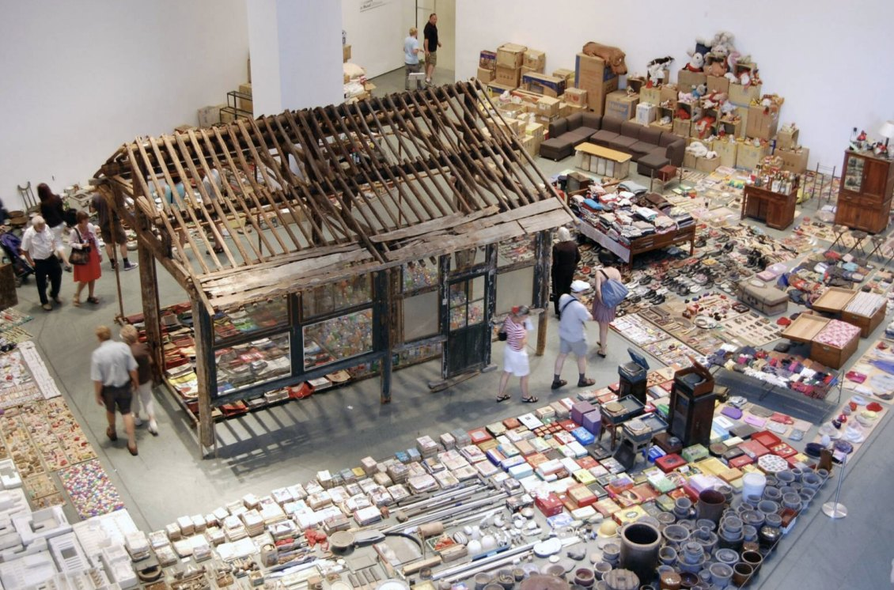
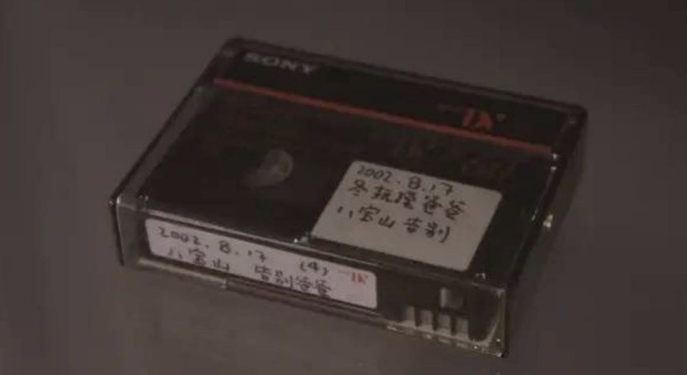
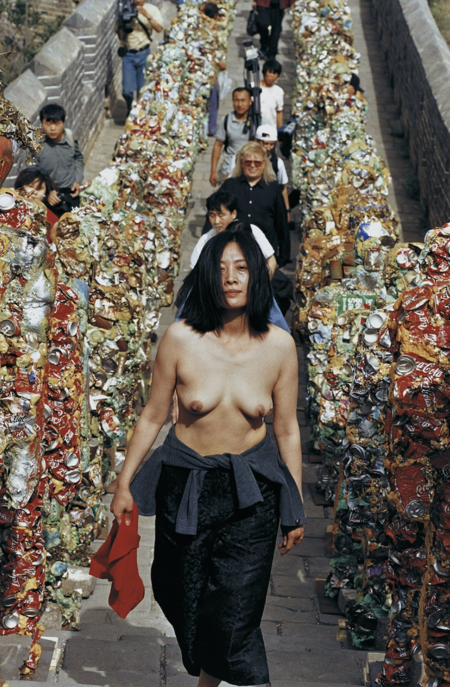

The Inheritance of Post-Maoism
By: Madeline Heller
This paper examines how contemporary Sinophone artists give form to the psychological inheritance of the Cultural Revolution (1966–1976), a rupture whose trauma continues to shape family life, memory, and identity in post-socialist China. Where official narratives treat Maoism as a closed chapter, these artists reveal how political violence quietly embeds itself in domestic settings, family structures, and the body itself.
Through a comparative reading of Zhang Xiaogang, Song Dong, and He Chengyao, it argues that medium is not incidental but constitutive: each artist’s chosen form (painting, installation, performance) structures a distinct way of remembering and transmitting inherited trauma.

Zhang Xiaogang’s Bloodline family portraits use repetition and a cool, photographic distance to render trauma as something quietly and endlessly reproduced across generations. Song Dong’s autobiographical installations achieve intimacy through physical engagement with family objects, while He Chengyao’s performance work locates that same history directly in the artist’s own body.
Drawing on scholarship in cultural memory and affect, the paper shows how these practices move beyond straightforward historical representation toward embodied testimony, laying bare trauma as a defining condition of post-Mao subjectivity, and connecting individual sensation to collective experience.



PDF · 34 pages · opens in a new tab